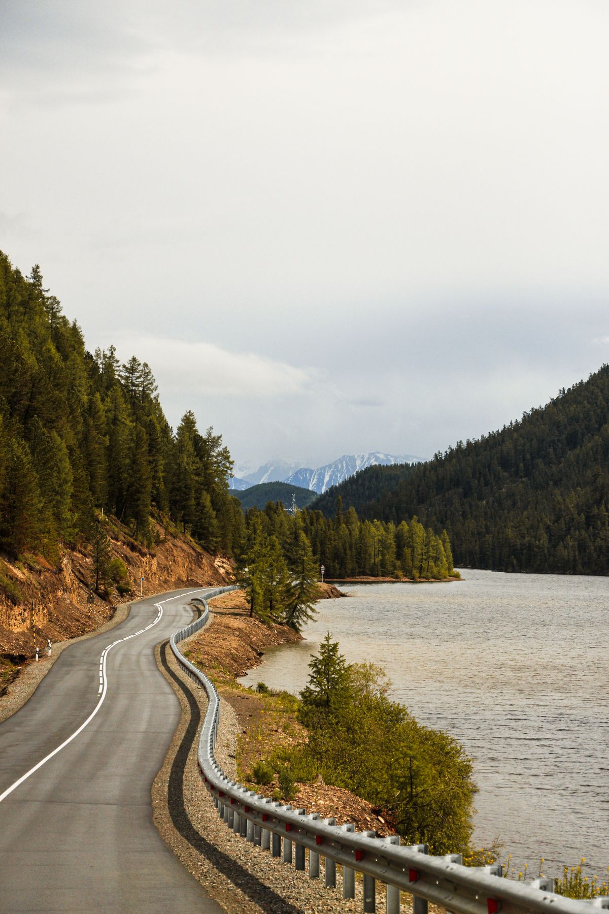
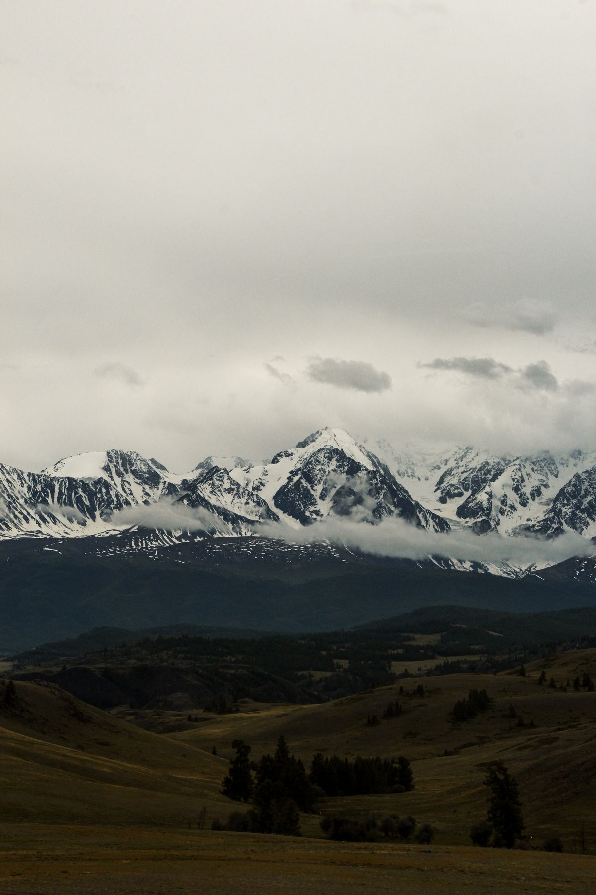
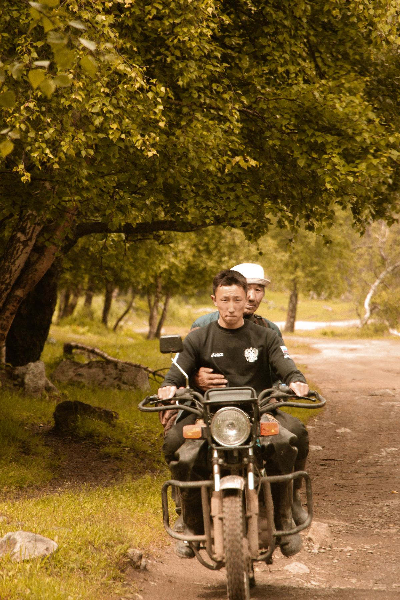
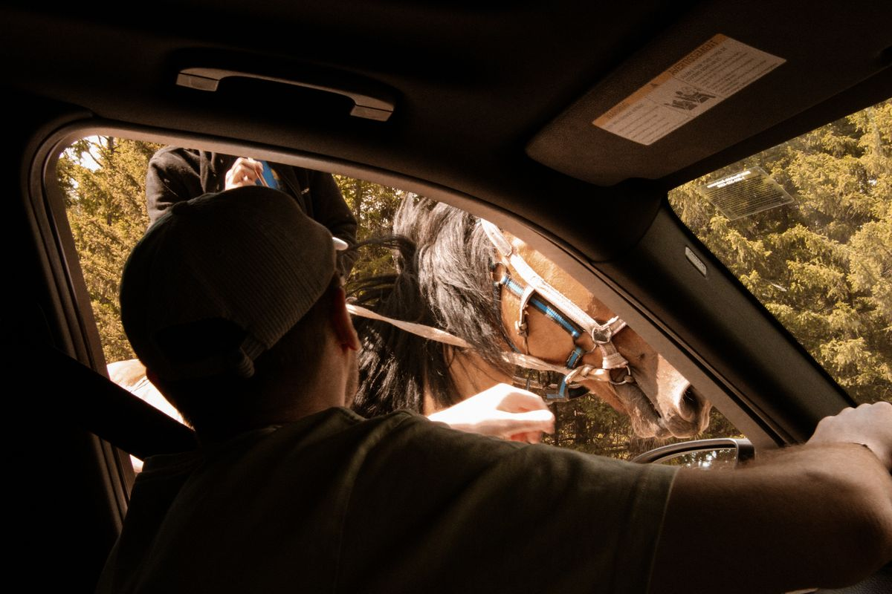

История на платформе
Публикация истории героя на сайте проекта.

Ездим в экспедиции по России, записываем интервью с местными жителями и выпускаем их истории онлайн и в печатном зине.

Мастеров, художников, предпринимателей, хранителей традиций, исследователей и других людей, связанных с жизнью территории.
Проводим интервью в их реальной среде и снимаем документальные фотографии и видео.
Создаём цифровые выпуски, публикации и печатные зины.
Помогаем героям становиться видимыми за пределами своего региона и создаём связи между участниками проекта.
Мы рассказываем о людях, которые своим делом формируют жизнь территории: мастерах, художниках, предпринимателях, учителях, исследователях, хранителях традиций и создателях локальных инициатив.
Участие в проекте бесплатно. Мы создаём материалы о человеке и его деле и передаём герою готовые фотографии и другие материалы.
Мы не берём с героев плату за участие и не получаем процент от их продаж, заказов или других результатов публикации.
Публикация истории героя на сайте проекта.
Фотографии героя, его работы и среды, в которой он живёт и работает.
В социальных сетях проекта и на партнёрских площадках.
Рассказ о мастерской, продукте, инициативе, услуге или другом деле героя аудитории проекта.
История героя может войти в тематический выпуск проекта и печатный зин.
Возможность познакомиться с другими героями, авторами и партнёрами проекта.
В 2026–2027 годах «Друг» отправляется в разные регионы России, чтобы собрать истории людей и локальных сообществ.
География будет расширяться.

Мы рассказываем о людях, которые своим делом формируют жизнь территории. Публичность и опыт интервью не нужны, важно само дело и ваша готовность о нём говорить.

Участники экспедиций обучатся методам интервьюирования, видеосъёмке и основам документальной фотографии. Познакомятся с людьми из интересующей их области, увидят пути развития в своём регионе.
В экспедицию по региону едут те, кто в этом регионе живёт. Перед поездкой участники проходят обучение методике с наставником.
Подать заявкуДокументальные интервью с жителями региона.
Документальная съёмка людей и среды.
Короткие документальные материалы.
Собранные и отредактированные истории региона.
Материальное издание с историями героев.
Участие бесплатное, гонорар за интервью мы не платим. Герой получает видимость и признание вклада, связь с другими участниками проекта, все фотографии съёмки и печатный зин со своей историей.
Доверие невозможно собрать дистанционно. Мы не приглашаем героя в студию, а приезжаем к нему в среду. Это метод включённого наблюдения, который даёт контекст, невозможный при удалённой работе.
Молодые авторы, которые живут в одном из семи регионов маршрута. Журналистское образование не требуется: методика построена так, чтобы качественное интервью мог провести любой подготовленный человек.
Следить за экспедицией
Короткие заметки прямо с маршрута. Кого встретили, что снимаем сегодня, где застряли.